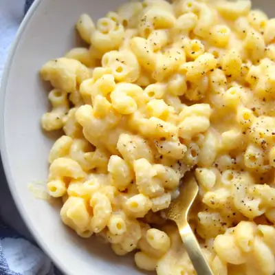

Cottage Cheese Mac and Cheese (with Butternut Squash)

Ingredients
- 16 ounces elbow macaroni or any small shaped pasta
- 8 ounces frozen butternut squash (thawed (see note)
- 1 cup whole milk cottage cheese (255g)
- 1 1/2 cups shredded sharp cheddar cheese
- 3/4 - 1 cup milk
- 1 tablespoon cornstarch (see note)
- 1/2 teaspoon garlic powder
- 1/2 teaspoon onion powder
- 1/2 teaspoon dijon mustard
- black pepper to taste
Steps
- Cook the pasta. Bring a large pot of water to a boil. Cook the macaroni according to package directions until tender. Reserve about 1/2 cup of the pasta water, then drain.
- Blend the sauce. While the pasta cooks, add the butternut squash and the rest of the ingredients into a high-speed blender. Blend until completely smooth and creamy.
- Cook the sauce. Pour the blended mixture into the same pot used for the pasta. Cook over medium-low heat for 3–5 minutes, stirring frequently, until the sauce is heated through and thickened. Do NOT bring to a boil.
- Combine. Add the cooked macaroni and stir until evenly coated. If the sauce is too thick, add reserved pasta water or milk, a tablespoon at a time, until it reaches your desired consistency.
Recipe by Min Kwon · Kidfriendly Meals, from MJ and Hungryman. Saved here for personal use; the original has the full notes, tips and photos. Open original